COMPANY INFOMATION
COMPANY INFOMATION
会社案内

 COMPANY INFOMATION
COMPANY INFOMATION会社案内
| 社名 | 株式会社システマック |
| 設立 | 1980年 6月 6日 |
| 代表者 | 風間 大介 |
| 資本金 | 60,000,000円 |
| 事業内容 | 物流システムのエンジニアリングとシステム設計・開発・運用指導とそのメンテナンス オフイス業務システムのシステム設計・開発・運用指導 |
| 所在地 |
【本社】
九州営業所】
【東京営業所】
【京都オフィス】
|
| 1980年 | 6月 |
会社を設立
|
| 1985年 | 6月 |
新聞刷版印字システムの販売の開始
|
| 1986年 | 6月 |
新聞社向け発送宛名印刷システム「CANMPシステム」の販売開始
|
| 1989年 | 6月 |
会計事務所向け業務管理システムの販売 |
| 1992年 | 9月 |
新聞社向けオンライン宛名印刷・搭載システム「MOVON」の販売開始 |
| 1993年 |
経理システム「Multis10」の販売開始 |
|
| 1995年 | 8月 |
新聞社向けオンライン宛名搭載機「ALPM」の販売開始 |
| 12月 |
新聞社向け少数束処理装置「カウンターヘッド」の販売開始 |
|
| 1998年 | 9月 |
折込チラシ計数補助装置「システムテーブル」の販売開始
|
| 1999年 | 9月 |
経理システム「Multis10 Windows版」の販売開始 |
| 2001年 | 2月 |
折込チラシ路線別分岐装置の販売開始 |
| 2004年 | 5月 |
紙分取装置の特許を取得 |
| 8月 |
テクニカルセンターを京都市南区に開設 |
|
| 2005年 | 4月 |
折込チラシ自動計数装置「カウンタック」の販売開始 |
| 9月 |
紙分取用計量装置の特許を取得
|
|
| 11月 |
本社を京都市中京区に移転
|
|
| 2006年 | 6月 |
折込チラシシステムユーザ会「LASの会」結成
|
| 11月 |
携帯電話を活用した運送業のリアルタイム荷物着荷確認システムを開発 |
|
| 2007年 | 5月 |
第2回「LASの会」開催
|
| 11月 |
九州営業所を開設 |
|
| 2008年 | 5月 |
第3回「LASの会」開催 |
| 11月 |
折込チラシ自動出荷装置「ピッキングシステム」の販売開始 |
|
| 2009年 | 1月 |
本社を滋賀県大津市に移転 |
| 6月 |
第4回「LASの会」開催
|
|
| 2010年 | 5月 |
第1回「LASの会」分科会開催(東京、福岡) |
| 6月 |
第5回「LASの会」開催 |
|
| 2006年 | 6月 |
折込チラシシステムユーザ会「LASの会」結成
|
| 11月 |
携帯電話を活用した運送業のリアルタイム荷物着荷確認システムを開発 |
|
| 2011年 | 6月 |
第6回「LASの会」開催 |
| 2012年 | 6月 |
第7回「LASの会」開催 |
| 2013年 | 4月 |
東京営業所 開設 |
| 5月 |
第8回「LASの会」開催 |
|
| 2014年 | 5月 |
第9回「LASの会」開催 |
| 2015年 | 5月 |
第10回「LASの会」開催 |